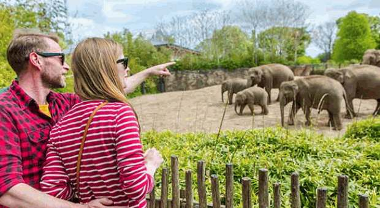

Guinness Storehouse, Dublin
Located at St. James's Gate Brewery, the Guinness Storehouse is the home of the Black Stuff, the heart of Dublin and an unforgettable element of any Irish adventure. An exciting visitor experience begins at the bottom of the world's largest pint glass, where you will learn the story of the beer's four ingredients: water, barley, hops and yeast. Your journey continues up through seven floors filled with interactive experiences that fuse Guinness' long brewing heritage with Ireland's rich history. At the top, you'll be rewarded with a pint of perfection in our world-famous rooftop Gravity Bar. Now that's our kind of higher education!
Annual Number of Visitors: 1,711,281
Cliffs of Moher, Co. Clare

You simply cannot travel to Ireland without paying a visit to the breathtaking Cliffs of Moher, situated in County Clare along the Wild Atlantic Way. The Cliffs of Moher have majestically faced the Atlantic for over 350 million years and their beauty is incomparable. The Cliffs are an area of outstanding natural beauty that is recognised as a UNESCO Global Geopark. Also, they are a haven for wildlife. Over 30,000 breeding bird pairs make the Cliffs their home annually, among them guillemots, razorbills, kittiwakes, peregrine falcons and the ever-popular cute puffins.
Annual Number of Visitors: 1,527,000
Dublin Zoo

Established in 1830, Dublin Zoo works in partnership with zoos worldwide to make a significant contribution to the conservation of the endangered species on Earth. Located in Dublin's Phoenix Park and covering over 28 hectares, the Zoo is divided into the following areas: Asian Forests, Orangutan Forest, The Kaziranga Forest Trail, Fringes of the Arctic, Sea Lion Cove, African Plains, Roberts House, House of Reptiles, City Farm and South American House. Home to some 400 animals in a safe environment, Dublin Zoo is where education and conservation combine for an exciting and stimulating day out for all the family.
Annual Number of Visitors: 1,264,300
National Aquatic Centre, Dublin

Located in the Dublin suburb of Blanchardstown, Dublin, the National Aquatic Centre is Ireland's largest and most popular Water Park. The 2,500-capacity venue has won numerous major awards, including Best Leisure Facility in Ireland. It has hosted pre-Olympic training camps for teams from 16 different countries and 190 athletes, among them eventual Water Polo Champions, Croatia, and the Synchronised Swimming Team from the USA.
Annual Number of Visitors: 1,099,756
Book of Kells Exhibition, Trinity College, Dublin

Based at Trinity College in the heart of Dublin city, the Book of Kells Exhibition is a must-see on the itinerary of all visitors to Ireland. It showcases the nation's greatest cultural treasure and the world's most famous medieval manuscript: the Book of Kells, a 9th-century manuscript that documents the four Gospels of the life of Jesus Christ. The Exhibition also features access to the Long Room, a magnificent and beautiful library, that houses 200,000 of Trinity College's oldest books.
Annual Number of Visitors: 983,410